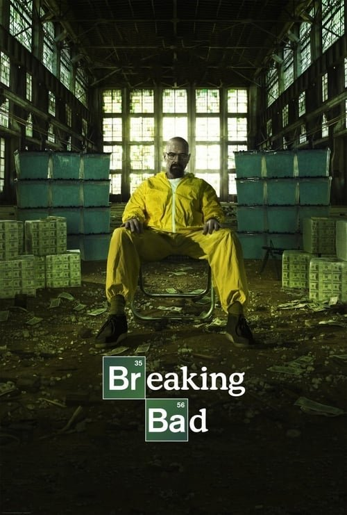

Breaking Bad (2008)
Sinopsis Rápida
Un profesor de química con cáncer se convierte en un capo de la metanfetamina, desencadenando una espiral de violencia, moralidad y supervivencia en el árido paisaje de Albuquerque.
Sinopsis Detallada
Breaking Bad sigue la transformación de Walter White, un profesor de química con un diagnóstico terminal de cáncer, quien decide cocinar metanfetamina para asegurar el futuro financiero de su familia. Su asociación con Jesse Pinkman, un exalumno adicto, lo lleva por un camino oscuro y peligroso, donde la línea entre el bien y el mal se desdibuja constantemente. La serie explora temas complejos sobre la moralidad, la ambición, la familia y la desesperación, ofreciendo una mirada cruda y realista a las consecuencias de las decisiones extremas. La tensión narrativa se mantiene en constante ascenso, con giros inesperados y un desarrollo de personajes magistral que la convierten en un clásico de la televisión moderna.
¿Por qué tenés que verla?
- Una narrativa absorbente que te mantiene al borde del asiento de principio a fin.
- La magistral actuación de Bryan Cranston como Walter White, una interpretación icónica de un personaje complejo y multifacético.
- Su impacto cultural innegable, definiendo un nuevo estándar en las series de televisión y dejando un legado duradero en la cultura popular.
- Exploración profunda y realista de temas morales y éticos.
Idea Extra
Análisis de la evolución del personaje de Walter White: del profesor sumiso al despiadado Heisenberg.
{{CONTENIDO_RELACIONADO}}